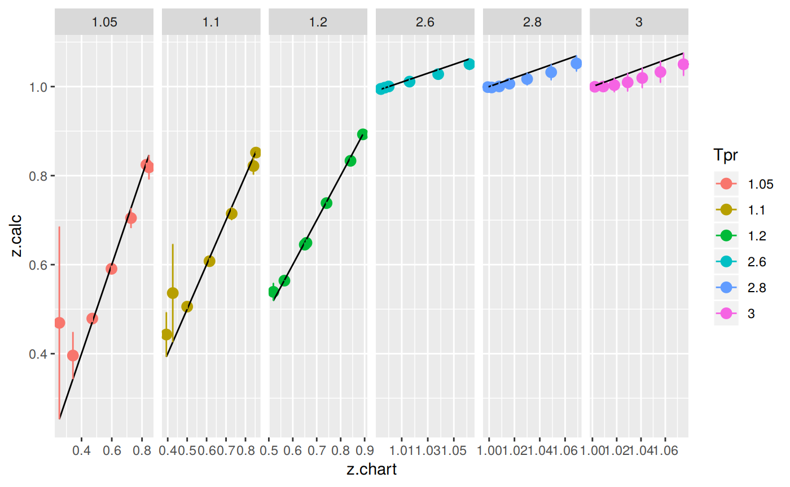

Papp correlation
2017-10-18
Papp correlation
This is an explicit correlation by I. Papp (Papp, 1979) mentioned in the comparative analysis paper by Gabor Takacs (Takacs, 1989). The original paper is not available in English but Prof. Takacs describe the equation in his paper of 1989.
Get z at selected Ppr and Tpr
Use the the correlation to calculate z and from Standing-Katz chart obtain z a digitized point at the given Tpr and Ppr.
# get a z value
library(zFactor)
ppr <- 1.5
tpr <- 2.0
z.calc <- z.Papp(pres.pr = ppr, temp.pr = tpr)
# get a z value from the SK chart at the same Ppr and Tpr
z.chart <- getStandingKatzMatrix(tpr_vector = tpr,
pprRange = "lp")[1, as.character(ppr)]
# calculate the APE
ape <- abs((z.calc - z.chart) / z.chart) * 100
df <- as.data.frame(list(Ppr = ppr, z.calc =z.calc, z.chart = z.chart, ape=ape))
rownames(df) <- tpr
df
# HY = 0.9580002; # DAK = 0.9551087 Ppr z.calc z.chart ape
2 1.5 0.962332 0.956 0.6623461
Get z at selected Ppr and Tpr=1.1
From the Standing-Katz chart we read z at a digitized point:
library(zFactor)
ppr <- 1.5
tpr <- 1.1
z.calc <- z.Papp(pres.pr = ppr, temp.pr = tpr)
# From the Standing-Katz chart we obtain a digitized point:
z.chart <- getStandingKatzMatrix(tpr_vector = tpr,
pprRange = "lp")[1, as.character(ppr)]
# calculate the APE (Average Percentage Error)
ape <- abs((z.calc - z.chart) / z.chart) * 100
df <- as.data.frame(list(Ppr = ppr, z.calc =z.calc, z.chart = z.chart, ape=ape))
rownames(df) <- tpr
df
# HY = 0.4732393 APE = 11.08903 Ppr z.calc z.chart ape
1.1 1.5 0.5361425 0.426 25.85506
Get values of z for combinations of Ppr and Tpr
In this example we provide vectors instead of a single point. With the same ppr and tpr vectors that we use for the correlation, we do the same for the Standing-Katz chart. We want to compare both and find the absolute percentage error or APE.
# test with vector extracted from paper
ppr <- c(0.5, 1.5, 2.5, 3.5, 4.5, 5.5, 6.5)
tpr <- c(1.05, 1.1, 1.7, 2)
# calculate using the correlation
z.calc <- z.Papp(ppr, tpr)
# With the same ppr and tpr vector, we do the same for the Standing-Katz chart
z.chart <- getStandingKatzMatrix(ppr_vector = ppr, tpr_vector = tpr)
ape <- abs((z.calc - z.chart) / z.chart) * 100
# calculate the APE
cat("z.correlation \n"); print(z.calc)
cat("\n z.chart \n"); print(z.chart)
cat("\n APE \n"); print(ape)z.correlation
0.5 1.5 2.5 3.5 4.5 5.5 6.5
1.05 0.8243607 0.4692711 0.3958632 0.4788553 0.5906236 0.7046099 0.8186716
1.1 0.8517120 0.5361425 0.4430332 0.5056550 0.6077642 0.7145435 0.8215955
1.7 0.9736623 0.9138939 0.8665932 0.8471834 0.8578133 0.8919610 0.9406180
2 0.9877275 0.9623320 0.9432543 0.9366532 0.9450048 0.9675653 1.0015334
z.chart
0.5 1.5 2.5 3.5 4.5 5.5 6.5
1.05 0.829 0.253 0.343 0.471 0.598 0.727 0.846
1.10 0.854 0.426 0.393 0.500 0.615 0.729 0.841
1.70 0.968 0.914 0.876 0.857 0.864 0.897 0.942
2.00 0.982 0.956 0.941 0.937 0.945 0.969 1.003
APE
0.5 1.5 2.5 3.5 4.5 5.5
1.05 0.5596238 85.48266650 15.4120172 1.66779568 1.233507926 3.0797870
1.1 0.2679163 25.85505860 12.7311015 1.13099950 1.176554761 1.9830566
1.7 0.5849433 0.01160694 1.0738373 1.14546413 0.716057626 0.5617635
2 0.5832436 0.66234608 0.2395608 0.03701248 0.000507908 0.1480622
6.5
1.05 3.2303092
1.1 2.3073158
1.7 0.1467143
2 0.1462221
Analyze the error at the isotherms
Applying the function summary over the transpose of the matrix:
sum_t_ape <- summary(t(ape))
sum_t_ape 1.05 1.1 1.7 2
Min. : 0.5596 Min. : 0.2679 Min. :0.01161 Min. :0.0005079
1st Qu.: 1.4506 1st Qu.: 1.1538 1st Qu.:0.35424 1st Qu.:0.0916173
Median : 3.0798 Median : 1.9831 Median :0.58494 Median :0.1480622
Mean :15.8094 Mean : 6.4931 Mean :0.60577 Mean :0.2595650
3rd Qu.: 9.3212 3rd Qu.: 7.5192 3rd Qu.:0.89495 3rd Qu.:0.4114022
Max. :85.4827 Max. :25.8551 Max. :1.14546 Max. :0.6623461
Analyze the error for greater values of Tpr
library(zFactor)
# enter vectors for Tpr and Ppr
tpr2 <- c(1.2, 1.3, 1.5, 2.0, 3.0)
ppr2 <- c(0.5, 1.5, 2.5, 3.5, 4.5, 5.5)
# get z values from the SK chart
z.chart <- getStandingKatzMatrix(ppr_vector = ppr2, tpr_vector = tpr2, pprRange = "lp")
# We do the same with the HY correlation:
# calculate z values at lower values of Tpr
z.calc <- z.Papp(pres.pr = ppr2, temp.pr = tpr2)
ape <- abs((z.calc - z.chart) / z.chart) * 100
# calculate the APE
cat("z.correlation \n"); print(z.calc)
cat("\n z.chart \n"); print(z.chart)
cat("\n APE \n"); print(ape)z.correlation
0.5 1.5 2.5 3.5 4.5 5.5
1.2 0.8926577 0.6489440 0.5388870 0.5640639 0.6449346 0.7382795
1.3 0.9208943 0.7357072 0.6290383 0.6271826 0.6858996 0.7656800
1.5 0.9552137 0.8499334 0.7728520 0.7501411 0.7749505 0.8279008
2 0.9877275 0.9623320 0.9432543 0.9366532 0.9450048 0.9675653
3 0.9995561 1.0001483 1.0032952 1.0095589 1.0193297 1.0328185
z.chart
0.5 1.5 2.5 3.5 4.5 5.5
1.20 0.893 0.657 0.519 0.565 0.650 0.741
1.30 0.916 0.756 0.638 0.633 0.684 0.759
1.50 0.948 0.859 0.794 0.770 0.790 0.836
2.00 0.982 0.956 0.941 0.937 0.945 0.969
3.00 1.002 1.009 1.018 1.029 1.041 1.056
APE
0.5 1.5 2.5 3.5 4.5 5.5
1.2 0.03832749 1.2261856 3.8317839 0.16567267 0.779298982 0.3671385
1.3 0.53431458 2.6842320 1.4046605 0.91901585 0.277717125 0.8801037
1.5 0.76093659 1.0554821 2.6634712 2.57908019 1.905004145 0.9688092
2 0.58324362 0.6623461 0.2395608 0.03701248 0.000507908 0.1480622
3 0.24389752 0.8772760 1.4444808 1.88931540 2.081676730 2.1952223
Analyze the error at the isotherms
Applying the function summary over the transpose of the matrix to observe the error of the correlation at each isotherm.
sum_t_ape <- summary(t(ape))
sum_t_ape
# Hall-Yarborough
# 1.2 1.3 1.5 2
# Min. :0.05224 Min. :0.1105 Min. :0.1021 Min. :0.0809
# 1st Qu.:0.09039 1st Qu.:0.2080 1st Qu.:0.1623 1st Qu.:0.1814
# Median :0.28057 Median :0.3181 Median :0.1892 Median :0.1975
# Mean :0.30122 Mean :0.3899 Mean :0.2597 Mean :0.2284
# 3rd Qu.:0.51710 3rd Qu.:0.5355 3rd Qu.:0.3533 3rd Qu.:0.2627
# Max. :0.57098 Max. :0.8131 Max. :0.5162 Max. :0.4338
# 3
# Min. :0.09128
# 1st Qu.:0.17466
# Median :0.35252
# Mean :0.34820
# 3rd Qu.:0.52184
# Max. :0.59923 1.2 1.3 1.5 2
Min. :0.03833 Min. :0.2777 Min. :0.7609 Min. :0.0005079
1st Qu.:0.21604 1st Qu.:0.6208 1st Qu.:0.9905 1st Qu.:0.0647749
Median :0.57322 Median :0.8996 Median :1.4802 Median :0.1938115
Mean :1.06807 Mean :1.1167 Mean :1.6555 Mean :0.2784555
3rd Qu.:1.11446 3rd Qu.:1.2832 3rd Qu.:2.4106 3rd Qu.:0.4973229
Max. :3.83178 Max. :2.6842 Max. :2.6635 Max. :0.6623461
3
Min. :0.2439
1st Qu.:1.0191
Median :1.6669
Mean :1.4553
3rd Qu.:2.0336
Max. :2.1952 Prepare to plot SK vs PP correlation
library(zFactor)
library(tibble)
library(ggplot2)
tpr2 <- c(1.05, 1.1, 1.2, 1.3)
ppr2 <- c(0.5, 1.0, 1.5, 2, 2.5, 3.0, 3.5, 4.0, 4.5, 5.0, 5.5, 6.0, 6.5)
sk_dak_2 <- createTidyFromMatrix(ppr2, tpr2, correlation = "PP")
as.tibble(sk_dak_2)
p <- ggplot(sk_dak_2, aes(x=Ppr, y=z.calc, group=Tpr, color=Tpr)) +
geom_line() +
geom_point() +
geom_errorbar(aes(ymin=z.calc-dif, ymax=z.calc+dif), width=.4,
position=position_dodge(0.05))
print(p)# A tibble: 52 x 5
Tpr Ppr z.chart z.calc dif
<chr> <dbl> <dbl> <dbl> <dbl>
1 1.05 0.5 0.829 0.8243607 0.0046392814
2 1.1 0.5 0.854 0.8517120 0.0022880049
3 1.2 0.5 0.893 0.8926577 0.0003422645
4 1.3 0.5 0.916 0.9208943 -0.0048943216
5 1.05 1.0 0.589 0.6199052 -0.0309052477
6 1.1 1.0 0.669 0.6758011 -0.0068010552
7 1.2 1.0 0.779 0.7629806 0.0160193915
8 1.3 1.0 0.835 0.8251938 0.0098062071
9 1.05 1.5 0.253 0.4692711 -0.2162711462
10 1.1 1.5 0.426 0.5361425 -0.1101425496
# ... with 42 more rows
Analysis at the lowest Tpr
This is the isotherm where we see the greatest error.
library(zFactor)
sk_dak_3 <- sk_dak_2[sk_dak_2$Tpr==1.05,]
sk_dak_3
p <- ggplot(sk_dak_3, aes(x=Ppr, y=z.calc, group=Tpr, color=Tpr)) +
geom_line() +
geom_point() +
geom_errorbar(aes(ymin=z.calc-dif, ymax=z.calc+dif), width=.2,
position=position_dodge(0.05))
print(p)
Tpr Ppr z.chart z.calc dif
1 1.05 0.5 0.829 0.8243607 4.639281e-03
5 1.05 1.0 0.589 0.6199052 -3.090525e-02
9 1.05 1.5 0.253 0.4692711 -2.162711e-01
13 1.05 2.0 0.280 0.3998218 -1.198218e-01
17 1.05 2.5 0.343 0.3958632 -5.286322e-02
21 1.05 3.0 0.407 0.4292515 -2.225150e-02
25 1.05 3.5 0.471 0.4788553 -7.855318e-03
29 1.05 4.0 0.534 0.5339879 1.210687e-05
33 1.05 4.5 0.598 0.5906236 7.376377e-03
37 1.05 5.0 0.663 0.6475878 1.541217e-02
41 1.05 5.5 0.727 0.7046099 2.239005e-02
45 1.05 6.0 0.786 0.7616403 2.435970e-02
49 1.05 6.5 0.846 0.8186716 2.732842e-02
Analyzing performance of the PP correlation for all the Tpr curves
In this last example, we compare the values of z at all the isotherms.
We use the function getCurvesDigitized to obtain all the isotherms or Tpr curves in the Standing-Katz chart that have been digitized.
The next function createTidyFromMatrix calculates z using the correlation and prepares a tidy dataset ready to plot.
library(ggplot2)
library(tibble)
# get all `lp` Tpr curves
tpr_all <- getStandingKatzTpr(pprRange = "lp")
ppr <- c(0.5, 1.5, 2.5, 3.5, 4.5, 5.5, 6.5)
sk_corr_all <- createTidyFromMatrix(ppr, tpr_all, correlation = "PP")
as.tibble(sk_corr_all)
p <- ggplot(sk_corr_all, aes(x=Ppr, y=z.calc, group=Tpr, color=Tpr)) +
geom_line() +
geom_point() +
geom_errorbar(aes(ymin=z.calc-dif, ymax=z.calc+dif), width=.4,
position=position_dodge(0.05))
print(p)# A tibble: 112 x 5
Tpr Ppr z.chart z.calc dif
<chr> <dbl> <dbl> <dbl> <dbl>
1 1.05 0.5 0.829 0.8243607 0.0046392814
2 1.1 0.5 0.854 0.8517120 0.0022880049
3 1.2 0.5 0.893 0.8926577 0.0003422645
4 1.3 0.5 0.916 0.9208943 -0.0048943216
5 1.4 0.5 0.936 0.9408336 -0.0048335907
6 1.5 0.5 0.948 0.9552137 -0.0072136788
7 1.6 0.5 0.959 0.9657774 -0.0067773900
8 1.7 0.5 0.968 0.9736623 -0.0056622515
9 1.8 0.5 0.974 0.9796287 -0.0056286532
10 1.9 0.5 0.978 0.9841963 -0.0061962511
# ... with 102 more rowsRange of applicability of the correlation
# MSE: Mean Squared Error
# RMSE: Root Mean Squared Error
# RSS: residual sum of square
# ARE: Average Relative Error, %
# AARE: Average Absolute Relative Error, %
library(dplyr)
grouped <- group_by(sk_corr_all, Tpr, Ppr)
smry_tpr_ppr <- summarise(grouped,
RMSE= sqrt(mean((z.chart-z.calc)^2)),
MPE = sum((z.calc - z.chart) / z.chart) * 100 / n(),
MAPE = sum(abs((z.calc - z.chart) / z.chart)) * 100 / n(),
MSE = sum((z.calc - z.chart)^2) / n(),
RSS = sum((z.calc - z.chart)^2),
MAE = sum(abs(z.calc - z.chart)) / n(),
RMLSE = sqrt(1/n()*sum((log(z.calc +1)-log(z.chart +1))^2))
)
ggplot(smry_tpr_ppr, aes(Ppr, Tpr)) +
geom_tile(data=smry_tpr_ppr, aes(fill=MAPE), color="white") +
scale_fill_gradient2(low="blue", high="red", mid="yellow", na.value = "pink",
midpoint=12.5, limit=c(0, 25), name="MAPE") +
theme(axis.text.x = element_text(angle=45, vjust=1, size=11, hjust=1)) +
coord_equal() +
ggtitle("Papp", subtitle = "PP")
Plotting the Tpr and Ppr values that show more error
The MAPE (mean average percentage error) gradient bar indicates that the more red the square is, the more error there is.
library(dplyr)
sk_corr_all %>%
filter(Tpr %in% c("1.05", "1.1", "2.4", "2.6", "2.8", "3")) %>%
ggplot(aes(x = z.chart, y=z.calc, group = Tpr, color = Tpr)) +
geom_point(size = 3) +
geom_line(aes(x = z.chart, y = z.chart), color = "black") +
facet_grid(. ~ Tpr, scales = "free") +
geom_errorbar(aes(ymin=z.calc-abs(dif), ymax=z.calc+abs(dif)),
position=position_dodge(0.5))
With the exception of the isotherms at 1.05 and 1.1, the Papp correlation looks acceptable good.
Looking numerically at the errors
Finally, the dataframe with the calculated errors between the z from the correlation and the z read from the chart:
as.tibble(smry_tpr_ppr)# A tibble: 112 x 9
# Groups: Tpr [?]
Tpr Ppr RMSE MPE MAPE MSE RSS
<chr> <dbl> <dbl> <dbl> <dbl> <dbl> <dbl>
1 1.05 0.5 0.004639281 -0.5596238 0.5596238 2.152293e-05 2.152293e-05
2 1.05 1.5 0.216271146 85.4826665 85.4826665 4.677321e-02 4.677321e-02
3 1.05 2.5 0.052863219 15.4120172 15.4120172 2.794520e-03 2.794520e-03
4 1.05 3.5 0.007855318 1.6677957 1.6677957 6.170602e-05 6.170602e-05
5 1.05 4.5 0.007376377 -1.2335079 1.2335079 5.441094e-05 5.441094e-05
6 1.05 5.5 0.022390052 -3.0797870 3.0797870 5.013144e-04 5.013144e-04
7 1.05 6.5 0.027328416 -3.2303092 3.2303092 7.468423e-04 7.468423e-04
8 1.1 0.5 0.002288005 -0.2679163 0.2679163 5.234967e-06 5.234967e-06
9 1.1 1.5 0.110142550 25.8550586 25.8550586 1.213138e-02 1.213138e-02
10 1.1 2.5 0.050033229 12.7311015 12.7311015 2.503324e-03 2.503324e-03
# ... with 102 more rows, and 2 more variables: MAE <dbl>, RMLSE <dbl>References
[1] I. Papp. “Uj modszer foldgazok elteresi tenyezojenek szamitasara”. In: Koolaj es Foldgaz (Nov. 1979), pp. 345-47.
[2] G. Takacs. “Comparing Methods for Calculating z Factor”. In: Oil and Gas Journal (May. 1989). DOI: NA. <URL: https://www.researchgate.net/publication/236510717_Comparing_methods_for_calculating_Z-factor>.